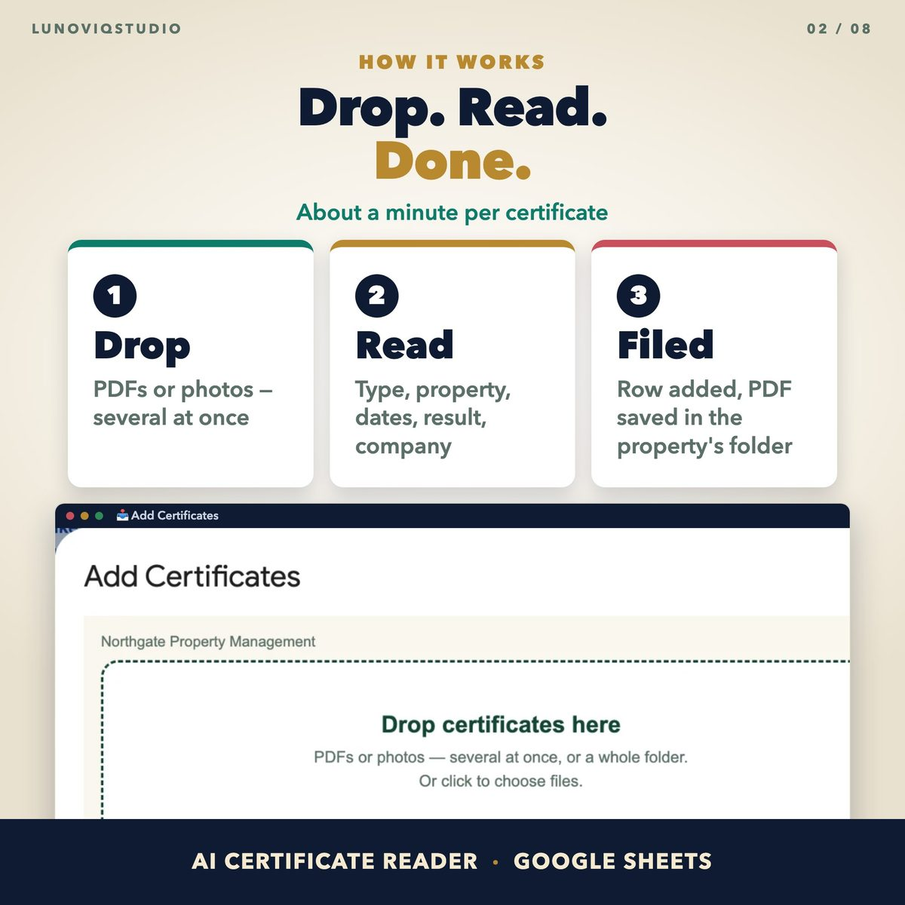
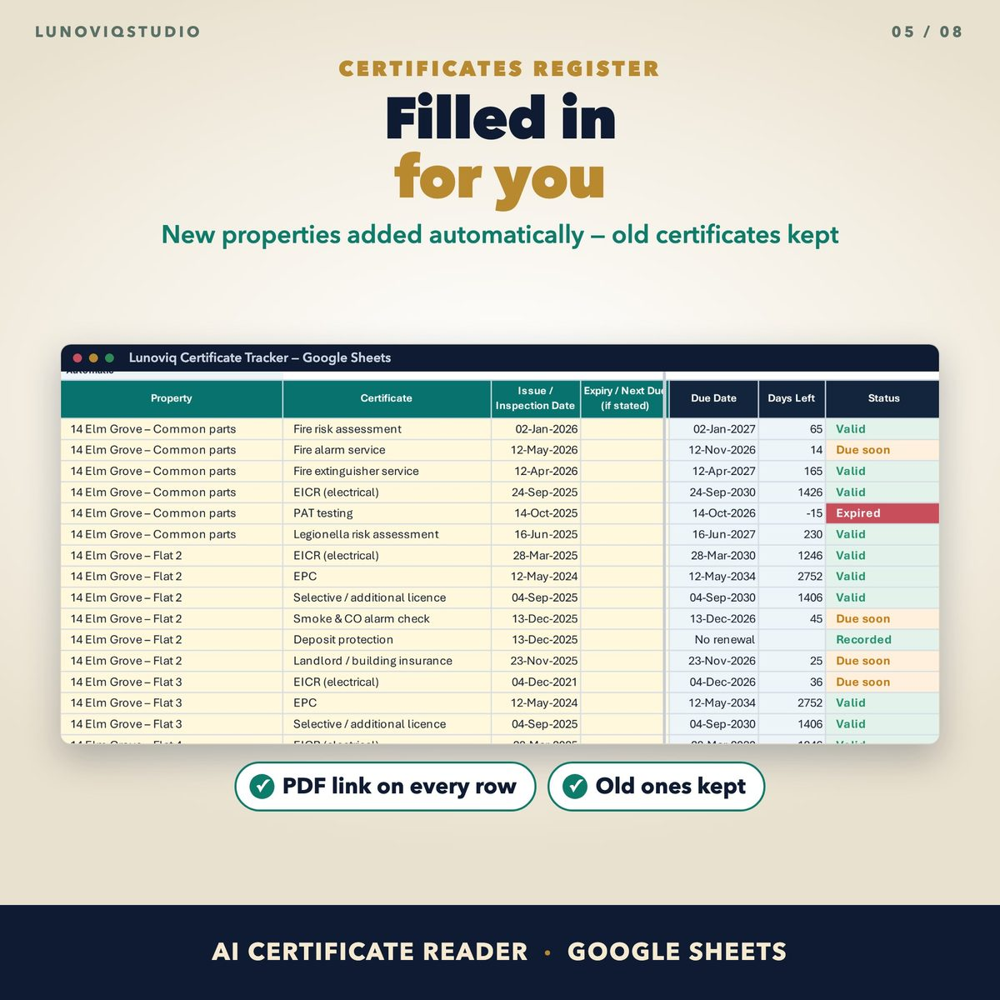
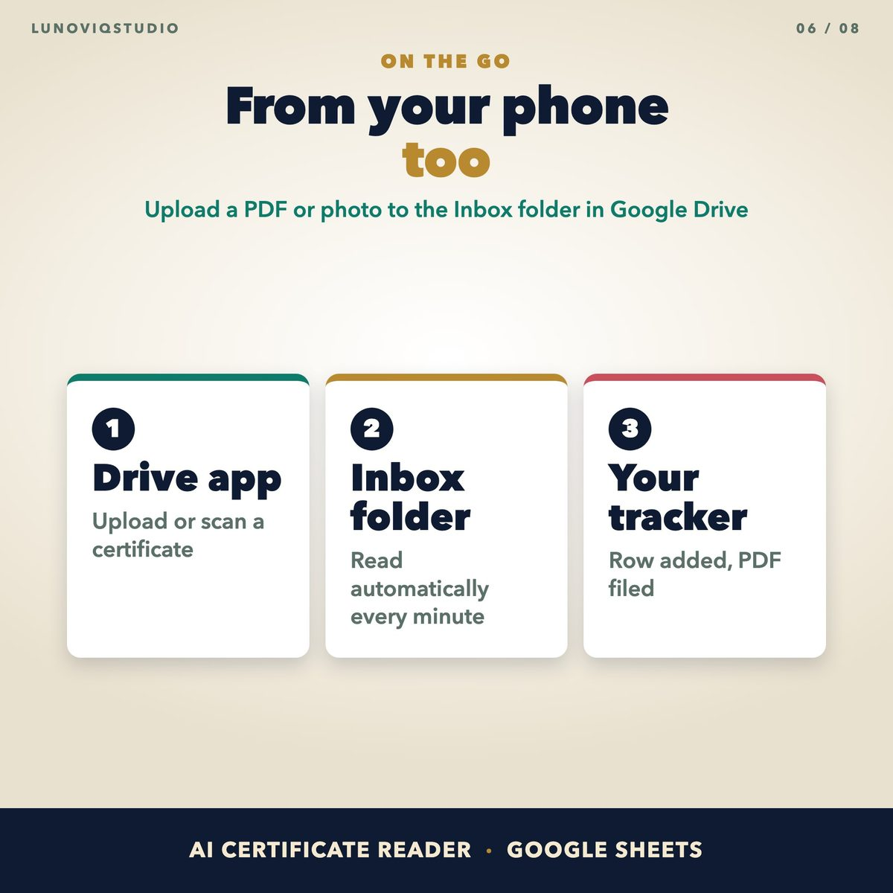
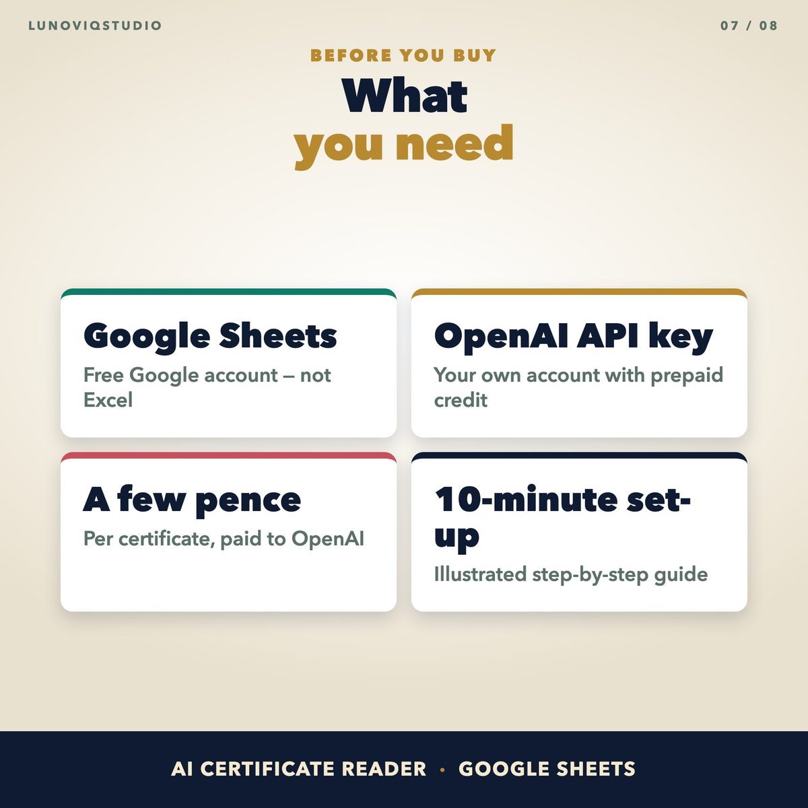

Home › Spreadsheets › AI Certificate Reader for Google Sheets
AI Certificate Reader for Google Sheets
Drop a certificate PDF and the tracker reads it and fills in the row: property, certificate type, dates, result, company and certificate number.
Made for: Letting agents and landlords with many properties who receive certificates as PDFs or photos and are tired of typing them in.
Get it on EtsyWhat it doesWhat it does
Reads PDFs and photos
Click ADD CERTIFICATES and drag in files, several at once. Each one is read within about a minute and added to the Certificates sheet.
Files every PDF in Google Drive
A copy goes to Certificates / Building / Unit. Older certificates are kept and shown as Replaced.
From your phone
Upload to the Inbox folder in Google Drive and it is read automatically.
New addresses added for you
New properties are added to your list in a fixed format. If an address looks like one you already have, the row is added with a note asking you.
Everything in the tracker
Dashboard, compliance matrix and next-due dates, up to 500 properties and 3,000 certificates.
See it




What you get
- Google Sheets copy link (in the set-up guide)
- Illustrated set-up guide PDF
Instant download. One-off price, no subscription, no macros.
Questions
What do I need?
A Google account and your own OpenAI API account with prepaid credit. Reading a certificate costs a few pence, paid to OpenAI. A ChatGPT subscription does not include API credit.
Where do my documents go?
Each certificate is sent to OpenAI with your key to be read, and filed in your own Google Drive. Only add documents you are allowed to share with OpenAI.
Does it work in Excel?
No, this version works in Google Sheets only. The UK Property Certificate Tracker works in Excel and Google Sheets.